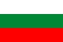

Disclaimer: These pages are not actively maintained, and some of the practical information on the site is out of date. I am working on a new version of the site that will focus more on my photos and memories of travel in Southeast Europe, and less on practical details that too easily become obsolete. In the meantime, please treat the information here with caution.
Bulgaria :: Introduction
Bulgaria is perhaps the definitive Balkan country. The Balkan mountain range that gave the peninsula its name runs through the heart of the country, and while there are 101 definitions of what exactly constitutes "the Balkans", every one of those definitions includes Bulgaria. A taste of most Balkan attractions can be found here: beautiful monasteries in isolated valleys, historic towns, craggy peaks, scenic train journeys, Roman ruins, beaches, and yoghurt. The Black Sea coast is becoming increasingly well-known as a destination for seaside holidays, but the rest of the country still sees relatively few visitors: once when I was standing on the platform of an obscure station north of Sofia, a young man stopped in front of me, looked at me and my guidebook for several seconds, and exclaimed "you're a foreigner!"

Where to go: some suggestions
Bulgaria's many mountain ranges and low population density make it a good place to enjoy the great outdoors. The Rila and Pirin ranges in the southwest are the highest peaks in the Balkans - this area has good hiking trails and several mountain resorts, including once-picturesque but rapidly developing Bansko. Rila Monastery is another popular attraction in this area. A great way to enjoy Bulgaria's mountain landscapes is to take the narrow-gauge railway from Bansko to Septemvri. South of the Pirin, almost at the Greek border, Rozhen Monastery and the village of Melnik are surrounded by distinctive sandstone rock formations. Lower mountain ranges such as the Balkans, Rhodopes, and Sredna Gora are less dramatic but still offer opportunities to enjoy long walks amidst a colourful variety of flowers and butterflies - although in some cases information can be hard to obtain.
Plovdiv is one of my favourite cities in the Balkans. It has colourful 19th century architecture in a museum-like old town, Roman ruins, and a lively modern centre. It's also within easy reach of Bachkovo Monastery. Similar 19th century houses survive in many smaller cities and towns. Veliko Târnovo is the most spectacular example, thanks to the fact that the houses are built on the sides of a gorge, facing a ruined citadel on the opposite bank. Târnovo is also a good base to visit some of central Bulgaria's attractive smaller towns and monasteries. Closer to Sofia lies Koprivshtitsa, perhaps the most striking of all Bulgaria's historic small towns and villages.
Sofia is not one of Europe's most glamorous capitals, and I didn't like it at all when I first visited. I have since now grown quite fond of it - when the sun shines and the crowds stroll along the boulevards eating ice cream, it is possible to overlook the cracked pavements and lack of historic buildings. And the Alexander Nevski Cathedral is undeniably impressive. Sofia is also a good base for excursions in western Bulgaria. Even so, Sofia loses out to Plovdiv in any comparison of conventional tourist appeal. If you have been exploring rural Bulgaria and feel the need to visit a lively modern city, Varna is also an option. From there you can easily reach the Black Sea beaches, but as I'm not really a fan of beach resorts I can't help you to choose one.
Practicalities
Transport

Although Bulgaria is not a large country, getting around can be quite time-consuming due to the mountainous terrain. The same mountainous terrain means that many journeys are very scenic, so allow yourself plenty of time and enjoy the trip. The fastest routes (Sofia-Varna and Sofia-Plovdiv-Burgas) are across relatively flat country. If you don't have a car it's best to use a mixture of buses and trains. There are a number of private companies operating express services in modern coaches on main routes. These are among the most comfortable and efficient bus services in the Balkans, perhaps due to the influence of neighbouring Turkey. At the other extreme, some of the public buses serving more remote places are very decrepit indeed. As in most countries in the region, the cheapest trains (pâtnicheski) are very slow and often quite run-down. Fast (bârz), express, and intercity trains are more comfortable, if hardly luxurious, and still very cheap.
Bulgaria is linked to all of its neighbouring countries except Macedonia by train. Two of the classic trans-European rail routes cross the country: Belgrade-Sofia-Plovdiv-Istanbul and Bucharest-Veliko Tarnovo-Istanbul. If you really enjoy train travel, there is even a daily train from Sofia to Moscow via Bucharest and Kiev. The trip lasts 57 hours - I believe this is currently the longest train journey within the European continent. There are international buses to Macedonia, and buses may be faster than trains to some other countries. As far as I am aware no buses cross the Bulgaria-Romania border.
Boris III, Tsar of Bulgaria in the inter-war years, was a train fan. He used to insist on driving the Simplon Orient Express when it passed through his country, until his government persuaded him to leave it to the professionals.
Language

If you are just visiting the Black Sea coast, you shouldn't have to worry too much about language problems. If you are going to travel independently, I recommend learning to read the Cyrillic alphabet before your visit. It's not as difficult as it might look - each letter corresponds strictly to only one sound. It might seem pointless learning to sound out words in a language you don't understand, but it is hugely helpful to be able to recognise the names of cities and streets. After a few days in Bulgaria you'll recognise instantly that "Пловдив" is "Plovdiv". There is no universally accepted way of transliterating Bulgarian into Latin characters, so be prepared to see different versions of some place names in guidebooks and on road signs. See The Cyrillic Alphabet in the Balkans.
A surprising number of restaurants have menus in English, even away from the coastal resorts, and quite a few young people and hotel staff speak English. Overall, though, it can be much harder to find an English speaker than in most parts of the former Yugoslavia.
Money
Bulgaria's currency is the lev (plural leva, abbreviation lv or лв) one lev consists of 100 stotinki. For some years the currency has been stable at around 1.96 leva to the euro - or as I prefer to think of it, exactly one leva to the Bosnian Convertible Mark. Cash is easily obtained from plentiful ATMs. If for some reason you get your kicks from on-street deals with money changers of dubious honesty, just walk around central Varna and wait for them to hiss at you. I feel embarrassed for them really, the whole shady-Eastern-European-money-changer thing is just so twentieth century.
Bulgaria is generally one of the cheapest countries in Europe. The one thing that might distort your budget is accommodation. Hotel charges are often higher for foreigners than locals and are rather unpredictable. In less touristed places you might end up paying quite a lot to stay in the town's one communist-era hotel (good value for fans of the colour brown, not so much for the rest of us); in more popular locations some newer hotels offer both comfort and value. In some mountain and beach resorts it is possible to stay in private rooms. It is still common for hotels to charge foreigners more than Bulgarian residents. Almost all museums do the same thing. Even the higher entrance fees are generally trivial, with a few exceptions in Sofia.
Both Bulgaria and Romania have currency names derived from the word for "lion" (lev and leu respectively). Stotinki is one my favourite Balkan words, it somehow seems ideally suited to conveying the sense of something practically worthless. In fact it simply means "hundredths".
More photos in my Bulgaria Galleries